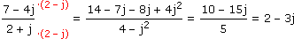

VIII. KOMPLEXE ZAHLEN
A. Rechnen in Komponentenform
B. Rechnen in Exponentialform
C. Komplexe Mehrfachwerte/Lösungen
D. Komplexe Wechselstromrechnung
 Ergänzungen und Details
Ergänzungen und Details auf
auf Die imaginäre Einheit ist eine nichtreelle Zahl j mit der Eigenschaft:
• j2 = –1
Wenn die bisherigen Rechenregeln weiterhin gelten sollen, müssen neue Zahlen zu alten addiert und mit solchen ≠ 0 multipliziert auch neue Zahlen ergeben. Das führt zu komplexen Zahlen in der sogenannten Komponentenform
a + jb ∈ mit a, b


Die Komponenten heißen Realteil a und Imaginärteil b, über b = 0 sind die alten Zahlen mitumfasst (
 ).
).2 Grundrechnungsarten in
 , und bilden zusammen mit Addition und Multiplikation "Körper" in dem Sinn, dass sie alle dieselbe Rechenstruktur haben. So gesehen rechnen wir mit komplexen Zahlen nicht anders, als ob wir mit reellen Zahlen und einer Variablen j rechnen würden.
, und bilden zusammen mit Addition und Multiplikation "Körper" in dem Sinn, dass sie alle dieselbe Rechenstruktur haben. So gesehen rechnen wir mit komplexen Zahlen nicht anders, als ob wir mit reellen Zahlen und einer Variablen j rechnen würden.
Aufgabe 1: Rechne mit z1 = 7–4j und z2 = 2+j wie folgt, bis das Ergebnis die Form a + jb hat:
a) z1 + z2 b) z1 – z2 c) z1·z2 d) z1:z2
a) z1 + z2 b) z1 – z2 c) z1·z2 d) z1:z2
a) z1 + z2 = (7 – 4j) + (2 + j) = 9 – 3j
b) z1 – z2 = (7 – 4j) – (2 + j) = 5 – 5j
c) z1·z2 = (7 – 4j)(2 + j) = 14 + 7j – 8j – 4j2 (= +4) = 18 – j
d) z1:z2 = 
Der Nenner und die Zahl, mit der wir hier erweitert haben, heißen konjugiert komplex:
• z = a + jb
 z* := a – jb
z* := a – jbB RECHNEN IN EXPONENTIALFORM
1 Grafische Darstellung komplexer Zahlen
Wenn wir Real- und Imaginärteil als kartesische Koordinaten interpretieren, können wir komplexe Zahlen als Zeiger in der komplexen Zahlenebene veranschaulichen. Solche Zeiger sind auch über Polarkoordinatem charakterisierbar: Das sind der Betrag r, der die Länge des Zeigers angibt, und der Winkel φ, den der Zeiger mit der positiven reellen Achse einschließt. Die Umrechnung schaut so aus:
|
polar kartesisch: • rx = rcosφ• ry = rsinφ kartesisch polar:
• r = √rx2 + ry2 • φ = arctan
ry rx |
Bem: Ob wir bei Zeigern, die nach links zeigen, zum arctan-Wert 180° addieren/subtrahieren, ist egal. Standardmäßig gehen wir aber so vor, dass das Ergebnis im Bereich von –180° bis +180° liegt (vgl. geographische Länge).
2 Grafische Addition und Multiplikation
Hinsichtlich Addition/Subtraktion und Multiplikation-mit-reeller-Zahl verhalten sich Zeiger wie 2-koordinatige Vektoren. Weiters gilt:
• Die Multiplikation mit j enspricht einer 90°-Drehung des Zeigers:
Und daraus folgt als Verallgemeinerung:
• Zeiger werden miteinander multipliziert, indem man die Beträge multipliziert und die Winkel addiert.
Beweis:
Bem: Die Division durch j entspricht einer Drehung um –90°, in der Verallgemeinerung werden die Beträge dividiert und die Winkel subtrahiert.
3 Exponentialform und 3. Rechenstufe
Obiges weist den Weg zur Definition der komplexen exp-log-Funktionen, vorweggenommen als weitere Schreibweise für komplexe Zahlen:
| • z |

|
Komponentenform: rx+jry Exponentialform: rejφ |
Damit lässt sich das Rechnen mit komplexen Zahlen in einem Satz skizzieren: Wir bringen die Operanden in die Form, wo vom Reellen her bekannte Regeln ansetzen können, und hangeln uns weiter, bis wir auf ein Ergebnis in der einen oder anderen Form stoßen:
• Potenz: (rejφ)c+jd = (elnrejφ)c+jd = (elnr+jφ)c+jd = ...
• exp-Funktion: ea+jb = eaejb (Argument in Komponentenform Ergebnis in Exponentialform)
• log-Funktion: ln(rejφ) = lnr + lnejφ = lnr + jφ (Argument in Exponentialform Ergebnis in Komponentenform)
Aufgabe 2: + 2j = ?
(0,7 + 1,45j)4
4,28e2,16j
(0,7 + 1,45j)4
4,28e2,16j
r = √rx2 + ry2 = √0,72 + 1,452 = 1,61
φ = arctan (± π, falls rx<0) = arctan = 1,12
ry
rx
1,45
0,7
(*) =
(1,61e1,12j)4
4,28e2,16j
6,72e4,48j
4,28e2,16j
rx = rcosφ = 1,57cos2,32 = –1,07
ry = rsinφ = 1,57sin2,32 = 1,15
(**) = –1,07 + 1,15j + 2j = –1,07 + 3,15j
In der Exponentialform gibt es unterschiedliche Darstellungen für denselben Zeiger:
z = rejφ = rej(φ±n·360°) mit φ
]–180°, 180°] und n 
Rechenregeln, die an der Exponentialform ansetzen, erzeugen daraus in bestimmten Fällen (Wurzel, Logarithmus,…) unterschiedliche Zeiger. Der Hauptwert ist der, der ausgehend von φ
]–180°, 180°] entstanden ist, die anderen heißen Nebenwerte.
Aufgabe 3: Bestimme Haupt- und Nebenwerte für z = 3√2e129°j.
n = 0
z1 = 1,26e43°j (= Hauptwert)n = 1
z2 = 1,26e163°jn = 2
z3 = 1,26e283°jDie n-ten Wurzeln einer Zahl c
bilden also einen regelmäßigen Stern aus n Zeigern. Als Lösung der Gleichung zn–c = 0 interpretiert, lässt sich das zum Hauptsatz der Algebra verallgemeinern: Eine Gleichung n-ten Grades hat im Komplexen genau n Lösungen, wobei jede Lösüng zi so oft gezählt wird, wie das Polynom durch (z–zi) dividierbar ist (siehe Satz von Vieta).2 Quadratische Gleichungen
Die Lösungsformel der quadratischen Gleichung
az2 + bz + c = 0 mit a,b,c
wird wie im Reellen hergeleitet und schaut auch genauso aus:
z1,2 =
–b ± √b2 – 4ac
2a
Bem: Der Wurzelausdruck steht für den Hauptwert und wird mit dem Plus/Minus davor zu Haupt- und Nebenwert (zwischen denen 180° liegen).
Aufgabe 4: Bestimme die Lösungsmenge in :
a) z2 – 6z + 10 = 0 b) z2 + (1 – 5j)z + 15j = 0
:
a) z2 – 6z + 10 = 0 b) z2 + (1 – 5j)z + 15j = 0
a) z1,2 =
6 ± √(–6)2 – 4·10
2
6 ± √–4
2
6 ± √–1√4
2
6 ± 2j
2
b) z1,2 = = = (*)
–(1 – 5j) ± √(1 – 5j)2 – 4·15j
2
–1 + 5j ± √–24 – 70j
2
r = √rx2 + ry2 = √(–24)2 + (–70)2 = 74
φ = arctan (± π, falls rx<0) = arctan – π = –1,9
ry
rx
–70
–24
(*) = = = (**)
–1 + 5j ± (74e–1,9j)12
2
–1 + 5j ± 8,6e–0,95j
2
rx = rcosφ = 8,6cos(–0,95) = 5
ry = rsinφ = 8,6sin(–0,95) = –7j
(**) =
–1 + 5j ± (5 – 7j)
2
–3 + 6j2 – jWenn wir zum Zeitpunkt t = 0 einen Zeiger rejφ haben und ihn dann mit der Winkelgeschwindigkeit ω drehen, erhalten wir als Imaginärteil davon eine sinusförmige Wechselgröße, die eine harmonische Schwingung auf der y-Achse beschreibt:
= rej(ωt+φ) = rcos(ωt + φ) + jrsin(ωt + φ)
Aufgabe 5: Die Nabe eines Riesenrads mit 50 m Durchmesser liegt 28 m über dem Boden, die Umlaufzeit liegt bei 210 s. Bestimme, wie viel Meter über dem Boden sich die unten eingezeichnete Gondel nach t Sekunden befindet.

Wir legen den Koordinatenursprung in die Nabe und betrachten den Zeiger z(t) von dort zur Gondel:
Startzeiger = 25ej(–2π/12)
Drehfaktor = ej(2π/210)t
h(t) = 28 + Imz(t) = 28 + 25sin(0,03t – 0,525)
Die Amplituden-Phasen-Form können wir in eine Kosinus-Sinus-Linearkombination umwandeln, indem wir die "komplexe Verpackung" so entwickeln:
 = (rx + jry)(cosωt + jsinωt) = (rxcosωt – rysinωt) + j(rycosωt + rxsinωt)
= (rx + jry)(cosωt + jsinωt) = (rxcosωt – rysinωt) + j(rycosωt + rxsinωt)
Aufgabe 6: Rechne Amplituden-Phasen-Form und Kosinus-Sinus-Form ineinander um.
a) 1,66sin(ωt + 1,24) b) 61cosωt – 54,5sinωt
a) 1,66sin(ωt + 1,24) b) 61cosωt – 54,5sinωt
a) = (*)
rx = rcosφ = 1,66cos1,24 = 0,54
ry = rsinφ = 1,66sin1,24 = 1,57
(*) = 1,57cosωt + 0,54sinωt
b) = (*)
r = √rx2 + ry2 = √(–54,5)2 + 612 = 81,8
φ = arctan (± π, falls rx<0) = arctan + π = 2,3
ry
rx
61
–54,5
(*) = 81,8sin(ωt + 2,3)
2 Elektrische Netzwerke
Wenn wir eine sinusförmige Wechselspannung
u(t) = Ûsin(ωt+φu)
an ein Netzwerk aus ohmschen, induktiven und kapazitiven Bauelementen anlegen, stellt sich nach einem Einschwingvorgang ein sinusförmiger Wechselstrom mit derselben Frequenz ein:
i(t) = Îsin(ωt+φi)
Wie oben dargelegt, können wir sinusförmige Wechselgrößen komplex verpacken und erhalten dann als Verallgemeinerung des ohmschen Gesetzes:
u(t) = Zi(t)
Der Wechselstromwiderstand
Z = R + jX = Zejφ (R = Wirkwiderstand, X = Blindwiderstand, Z = Scheinwiderstand, φ = φu – φi = Phasenverschiebung)
ist also der Faktor, der den i-Zeiger in den u-Zeiger dreht und auf dessen Länge justiert. Je nach Bauelement wird Z so berechnet:
Dazu kommen die bekannten Regeln, wonach sich bei Serienschaltungen die Z addieren und bei Parallelschaltungen ihre Kehrwerte.
Aufgabe 7: Bestimme Z für folgende Schaltung und interpretiere das Ergebnis.
ω = 200 s–1
L = 0,7 H
R = 300 Ω
C = 50 μF
L = 0,7 H
R = 300 Ω
C = 50 μF
 30 + 50j = (*)
30 + 50j = (*)
r = √rx2 + ry2 = √302 + 502 = 58,31
φ = arctan (± 180°, falls rx<0) = arctan = 59°
ry
rx
50
30
(*) = 58,31e59°j
Der u-Zeiger ist also 58,31mal so lang wie der i-Zeiger und eilt ihm um 59° voraus.
Aufgabe 8: Welchen Wert muss R in folgender Schaltung annehmen, damit bei f = 35 Hz die Phasenverschiebung φ = 14°?
RL = 23 Ω
L = 50 mH
L = 50 mH

tanφ = tan14° = 5,73R + 162,06 = 11R R = 30,8 Ω
Imz
Rez
tan14° = 11R
23R + 650
5,73R + 162,06 = 11R R = 30,8 Ω